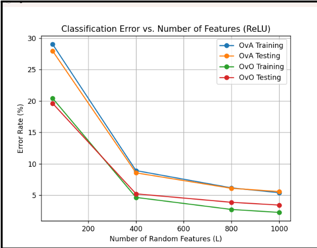

Supervised Learning & Computational Experimentation
Machine Learning Python NumPy Numerical Linear Algebra Feature Engineering
This project investigates supervised multiclass classification of handwritten digits using least-squares learning and randomized feature transformations.
Rather than relying on prebuilt machine learning classifiers, I implemented the classification algorithms using Python and NumPy, applying linear algebra and numerical methods to train, evaluate, and compare different models.
The primary objective was to understand how classification strategy, nonlinear feature representation, and feature dimensionality influence predictive performance and generalization.
The MNIST dataset consists of grayscale images of handwritten digits from 0 to 9. Each 28 × 28 image was represented as a 784-dimensional feature vector.
Model parameters were estimated by minimizing the squared difference between predicted outputs and target labels.
The Moore–Penrose pseudoinverse was used to obtain a least-squares solution without requiring the normal-equation matrix to be invertible.
Ten binary classifiers were trained independently, with each classifier distinguishing one digit from all remaining digits. The predicted digit was selected using the maximum classifier score.
Forty-five binary classifiers were trained using every unique pair of digits. Each classifier casts a vote for one of its two classes, and the digit receiving the most votes becomes the final prediction.
| Method | Training Accuracy | Test Accuracy |
|---|---|---|
| One-vs-All | 85.77% | 86.03% |
| One-vs-One | 93.78% | 92.97% |
One-vs-One achieved substantially better classification performance, improving test accuracy by 6.94 percentage points compared with One-vs-All. Both approaches exhibited relatively small differences between training and testing performance.
To investigate nonlinear feature representations, the original pixel vectors were transformed into a new feature space using a randomly generated weight matrix and bias vector.
Four activation functions were experimentally evaluated:
The classifiers were retrained using these transformed features. Different feature counts were investigated to understand the relationship between dimensionality and learning performance.
Test accuracy comparison using 1,000 randomized features:
| Feature Mapping | OvA Accuracy | OvO Accuracy |
|---|---|---|
| Identity | 86.03% | 92.97% |
| Sigmoid | 93.17% | 95.74% |
| Sinusoidal | 13.85% | 13.53% |
| ReLU | 94.43% | 96.58% |
This project strengthened my understanding of least-squares optimization, numerical linear algebra, multiclass learning, and feature engineering.
Through implementing and evaluating the models, I explored how mathematical choices influence practical machine learning performance. In particular, the experiments highlighted the importance of evaluating feature representations rather than assuming that increasing model complexity will necessarily produce better results.
Potential extensions include investigating regularized least squares, alternative random weight distributions, dimensionality reduction, and performance across multiple random seeds. These experiments could further clarify the relationship between computational complexity and generalization.